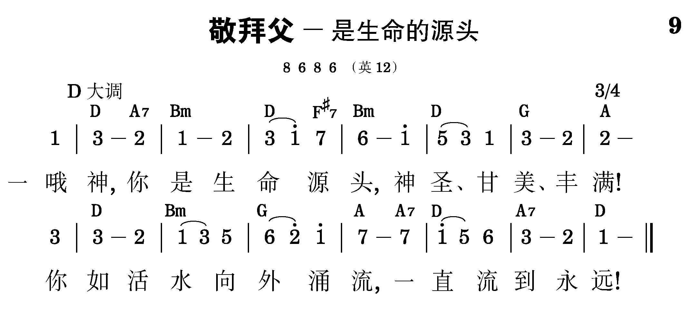

总题：话语的职事与为着神的经纶之神的分赐

2
你在子里因爱流出，
流到人类中间；
且成那灵带爱流入，
流进我们里面。
3
我们虽都偏行己路，
满了邪恶罪愆，
你在子里仍来救赎，
赐以生命恩典。
4
我们甚且将你欺侮，
时常抗拒圣灵，
但你这灵仍然眷顾，
来作我们生命。
5
你在子里、借成那灵，
已与我们调和；
你的成分借祂运行，
还要涂抹加多。
6
你的慈爱、子的恩典、
加上灵的交通，
使我得享神的丰满，
直到永世无终！
7
三一之神，
父、子、圣灵，
如此厚待我们，
配得我们和声响应，
赞美你爱不尽！